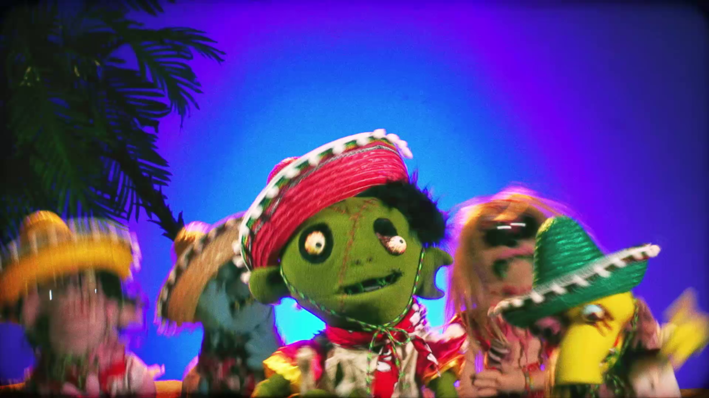

Nuevo single de 31 minutos: «Arwrarwrirwrarwro»

Daniel Castro / Pablo Ilabaca
Lo que canta Bombi a capela al final del video es una referencia a la canción «Day-O (The Banana Boat Song)», tradicional folckórica jamaicana popularizada por Harry Belafonte.